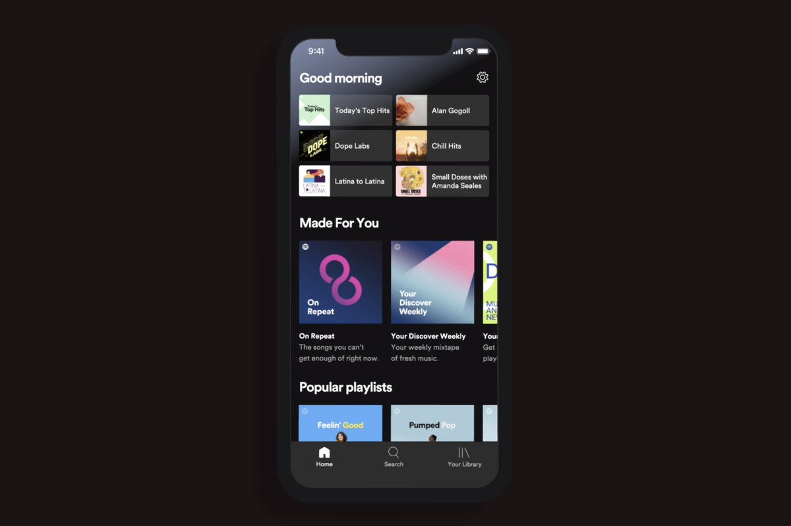
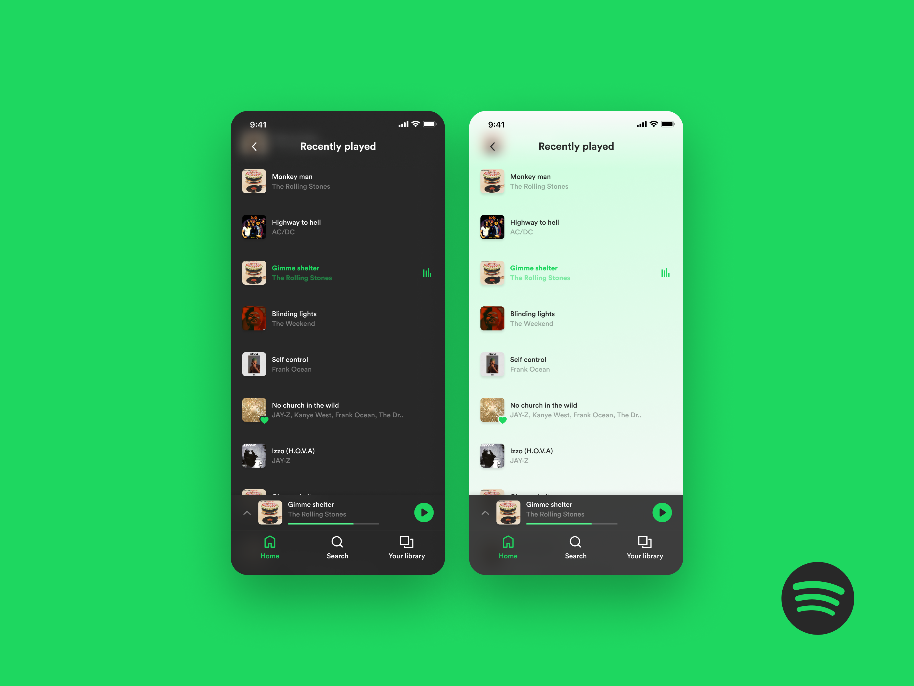

Latest product obsession: Spotify
Spotify is a Swedish music streaming service taking over the world and available in more than 50 languages with an estimated 75 million users (25% of which are paid subscribers.). It offers both an ad-supported free version and a premium subscription for US$9.99 a month, but both offer unlimited streaming of its 20 million-plus songs.
Spotify is one of my most favorite products recently and for three main reasons.
Reason one: Spotify’s mission isn’t simply about playing music; it’s about self discovery, curation, and social interactions.
When first opening the app, it’s clear to see that the front home page displays many themed playlist available.

However generic or default the home page is, the best and most used browsing search method on spotify are actually customer for each respective user. One example is “Discover Weekly”.
Discover weekly is an individual playlist artificially curated for each Spotify user based on their listening habits and content that is updated every Monday. Therefore, I and other Spotify users, are exposed to content that we have yet to hear based on our listening preferences.
While Pandora and the radio stations, constantly bring to light a new random song to listen to, it does not bring upon the same unique social and emotional feeling as Spotify's "Discover Weekly" feature. In comparison to radio stations like Star 101.3 or iHeart Radio 98.7, or Music platforms such as Pandora, they grow of music channels that pick the upcoming track based on recommendations similar to Spotify. However, Spotify's "Discover Weekly" feature provides the same effect as being excited to see a new episode update on a favorite show or drama you have been binge watching. Reciving a batch of new song content at the start of the week can become a routine and also create excitement or anticipation that a user can look forward to. Spotify makes discovery and intentional act of creating a new playlist, in which users can't go without.
The reasons people use Spotify and the playlists vary and differ so much from person to person, many users love to share and talk about their music habits at the end of each year. A recent campaign would be for example "2019 wrapped". Wrapped is a deep dive into the artists, songs, and podcasts that defined your year. The info graphics about a users listening habits is very interesting especially when shared with the world. The statistics include: Number of music minutes listed on the platforms, top genre, top artists, top songs, etc.
While Spotify does not directly have a social component in comparison to SoundCloud, where you can comment on each song and at a specific time of the song, it is still highly social. People can talk about what they listen to or have conversations about a playlist they use to find new favorite music. Even celebrities or large brands attempt to engage with fanbase through curated and regularly updated playlists in order to reflect who they are and how they are feeling. Not just about the music itself, Spotify had a reason for user to keep coming back onto the platform to unwrap the latest songs and content.
Reason two: Intuitive control. Spotify is a service existent everywhere and is not limited.
Spotify is cross platform, and allows a user ton engage in their music beyond an app. It can be connected to IPhone, TV, Speakers, Laptops (Chrome, Destop), Bluetooth, etc. Simply through a phone, I can quickly move my music playlist to various devices and switching from one to another. There are many non -phone devices that can run spotify too. Recently, car entertainment systems have Spotify apps, as well as television having Spotify as a built-in app.
Using a smartphone as a control for Spotify may not sound significant, but smartphones have always been able to act as a remote control. It's smoothness to crossover between a PC and smartphone is quite satisfying. Fro example, I may be playing Spotify on a Bluetooth speaker using my PC device;however, if I pick up my phone and open spotify, the app will asks if I want to continue on my computer or switch over to my phone instantly. Whichever device I choose, the process will be quick and simple.
Another example, Spotify combines its features so simply. The app that's the idea of "intuitive" to another level. On my laptop, I can save an album on the Spotify web app before I leave the house and it will be saved and downloaded to my phone just in time for when I take a walk outside and run errandes. The app is so accessible and hassle free.
Reason three: Feeling like you're part of a community.
On spotify, a user can add friends on Spotify knowing their username. From there we are able to see what a friend is listening to at the moment, whether they are online, and their playlists. When seeing a friends playlist, I am able to learn and listen to music I may have never listened to before and go check it out as self discovery. Another component about a friends playlist is seeing what kind of music they listen to, in order to learn something new about them, lifestyle, or their personality.
Having the ability to see what a friend is listening to at the moment, it is easy for me to use that as a way of receiving recommendations or simply creating a conversation. For example, I may see a friend listening to a song that I absolutely enjoy. This may lead me to message my friend and say "omg I love that song, have you also listened to (insert song or artists)" Spotify isn't just for connecting with yourself, but can also be a way to connect with others.
Recommendations for the Spotify Interface and features they may want to develop in the near future.
Communication rooms for friends to listen to the same song or playlist simultaneously
The user need is that people can stay connected with friends and family For example, many students listen to music when they are studying or doing everyday tasks. I believe it would be cool to have an online room in which friends can join and listen to a playlist of songs that they can choose from or create and add on themselves, while they study/listen together from their respective devices.
Thoughts can be shared on music through a minimalistic chat feature. In the case that a group of friends are in a room on the platform, an a keyboard chatbox (as to not disturb the song) or audio voice option (if the song is paused) would be great. This is to converse with each other about the current song playing or just about anything they'd like to say to each other.
Dark and light mode
Firstly, Spotify currently has a green and black user interface on their mobile and web app. I believe having the option of a light or dark mood would be nice in terms of eye vision and time of day, but most importantly the mood the user is feeling. I personally belive a lighter user interface would give the application a more bright and positive visual.
Current status, song recommendation section, and commenting
Music can be a conversation starter. One of the best things in the world is to find someone with similar music tastes you can share with. A feature that would make the platform more personal would be to have a small section under your profile of the friends list having a section where you can write a short few word bio about yourself or a question such as "looking for a song rec" or "my new favorite song". This could either spark conversation across friends or just share a detail on the platform to make users not so 2-dimentional. Also, the ability to comment on a song, playlist, podcast, artist through words, a heart react, or thumbs up react would be in support of the works online.
Last thoughts
Spotify is so much more than a music service, and its success is very visible to key strategic decisions. Spotify has essentially reinvented how people interact with playlists, making them widely used tools for discovery, curation, and sharing. As a designer, I recognise this to be superior product thinking. They recognised key opportunities and exploited them in a strong manner. They listened to their users and adapted as and when needed. To build on personalisation, they integrated a couple of niche features — like Spotify Unwrapped, Spotify Singles, playlists from your favourite artists and Daily Mixes. Spotify Unwrapped not only serves the purpose of being a subtle, high level campaign that markets the product, but also helps users feel more connected to the app and the music that they listen to.
So, in the age of commercialisation, they built a product with a vision to simultaneously uplift artists, personalise music for listeners and provide smaller artists with the kind of audience they could only hope to tap into. Whether you want to listen to one of the curated, awesome playlists, your own playlists, or just from your entire library, Spotify can be accessed on essentially every piece of hardware that can connect to the internet, whether that be a voice assistant, a tv, a car, or something else. Spotify has been able to shape how millions of people interact with music, making it a more intimate and accessible part of lives like my own. They have built a comprehensive product, are meticulous about bringing value to artists, and continue to perform on a great strategy. But best of all, they still have the support and the room to grow into an even more universal and impactful music platform.